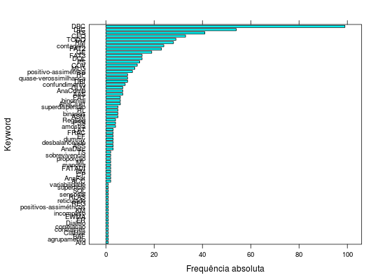

As keywords servem para classificar os conjuntos de
dados por características que definem, geralmente, o tipo de
análise a ser aplicada aos dados. Isso orienta os estudantes e
professores a escolherem os conjuntos de dados para listas de
exercício, por exemplo.
Um data.frame com 596 observações e 2 variáveis, em
que
name- Nome do conjunto de dados no pacote labestData.
keyword- Keyword atribuída ao conjunto de dados.
Details
As keywords estão organizadas por tema e estão descritas nas
tabelas abaixo.
- Técnicas multivariadas
-
|
AnaCorCan |
| Análise de correlação canônica |
|
AnaAgrup |
| Análise de agrupamento |
|
AnaComPrin |
| Análise de componentes principais |
|
AnaDisc |
| Análise discriminante |
|
AnaFat |
| Análise fatorial |
- Área da Estatística
-
|
TODO |
| Keywords a ser atribuída |
|
AAS |
| Amostra aleatória simples |
|
AASM |
| Amostra aleatória simples multivariada |
|
AASI |
| Amostras aleatórias simples independentes |
|
AASP |
| Amostras aleatórias simples pareadas |
|
contingência |
| Tabela de contingência |
|
CEQ |
| Controle estatístico da qualidade |
|
TS |
| Séries temporais |
|
sensorial |
| Análise sensorial |
- Tipo de resposta
-
|
binário |
| Resposta do tipo binária (dicotômica) |
|
binomial |
| Resposta do tipo binomial |
|
contagem |
| Resposta do tipo contagem |
|
proporção |
| Resposta do tipo proporção |
- Estrutura do dado
-
|
DIC |
| Delineamento inteiramente casualizado |
|
DBC |
| Delineamento em blocos casualizados completos |
|
DQL |
| Delineamento quadrado latino |
|
DBI |
| Delineamento em blocos casualizados incompletos |
|
BAF |
| Delineamento de blocos aumentados de Federer |
|
LAT |
| Experimento em látice |
|
RET |
| Experimento em delineamento reticulado |
|
FAT2 |
| Experimento fatorial duplo |
|
FAT3 |
| Experimento fatorial triplo |
|
FAT2K |
| Experimento fatorial de K fatores com 2 níveis |
|
FAT3K |
| Experimento fatorial de K fatores com 3 níveis |
|
FATADI |
| Experimento fatorial com tratamento(s) adicionai(s) |
|
ClaHier |
| Classificação hierárquica de fatores |
|
FRAC |
| Experimento fatorial fracionado |
|
PS |
| Experimento em parcela subdividida |
|
PSS |
| Experimento em parcela subsubdividida |
|
EF |
| Experimento em faixas |
|
GE |
| Grupo de experimentos |
|
COV |
| Análise de covariância |
|
ER |
| Ensaio de reversão |
|
dialelo |
| Experimento de cruzamento dialelo |
|
desbalanceado |
| Experimento desbalanceado |
|
contrastes |
| Fator com níveis para aplicação de contrastes planejados |
|
confundimento |
| Experimento com confundimento de efeitos |
|
replicata |
| Experimento com amostra dentro de parcela |
|
incompleto |
| Experimento fatorial de cruzamento incompleto |
- Modelo de regressão
-
|
MLG |
| Modelo linear generalizado |
|
RS |
| Regressão linear simples |
|
RM |
| Regressão múltipla |
|
RNL |
| Regressão não linear |
|
dummy |
| Variáveis categóricas para regressão |
Examples
data(keywords)
str(keywords)
#> 'data.frame': 596 obs. of 2 variables:
#> $ name : chr "ZimmermannTb10.15" "ZimmermannTb10.15" "ZimmermannTb10.20" "ZimmermannTb10.20" ...
#> $ keyword: Factor w/ 68 levels "AAS","ACC","Afd",..: 23 30 23 51 30 50 23 51 23 23 ...
library(lattice)
tb <- table(keywords$keyword)
barchart(sort(tb),
ylab = "Keyword",
xlab = "Frequência absoluta")

subset(keywords, keyword == c("DBI"))
#> name keyword
#> 248 RamalhoEg11.10 DBI
#> 249 RamalhoEg11.13 DBI
#> 250 RamalhoEg11.4 DBI
#> 280 RamalhoTb11.1 DBI
#> 281 RamalhoTb11.17 DBI
#> 310 PimentelPg185 DBI
#> 316 PimentelTb10.3.1 DBI
#> 317 PimentelTb10.4.1 DBI
#> 318 PimentelTb10.6.1 DBI
subset(keywords, keyword %in% c("proporção", "contagem"))
#> name keyword
#> 27 ZimmermannTb12.13 proporção
#> 29 ZimmermannTb12.14 proporção
#> 52 ZimmermannTb16.10 contagem
#> 55 ZimmermannTb16.4 contagem
#> 67 ZimmermannTb5.15 contagem
#> 120 DiasEg5.1 contagem
#> 149 DiasEx9.6.4 contagem
#> 184 PaulaEg4.2.6 contagem
#> 185 PaulaEg4.3.6 contagem
#> 213 PaulaEx3.7.21 contagem
#> 222 PaulaEx4.6.15 contagem
#> 224 PaulaEx4.6.17 contagem
#> 225 PaulaEx4.6.20 contagem
#> 226 PaulaEx4.6.5 contagem
#> 227 PaulaEx4.6.6 contagem
#> 228 PaulaEx4.6.7 contagem
#> 241 PaulaTb4.12 contagem
#> 242 PaulaTb4.14 contagem
#> 243 PaulaTb4.2 contagem
#> 244 PaulaTb4.7 contagem
#> 246 PaulaTb4.9 contagem
#> 269 RamalhoEx3.1 contagem
#> 273 RamalhoEx4.2 contagem
#> 293 RamalhoTb3.1 contagem
#> 347 PimentelTb7.9.1 contagem
#> 548 BanzattoQd3.2.1 contagem